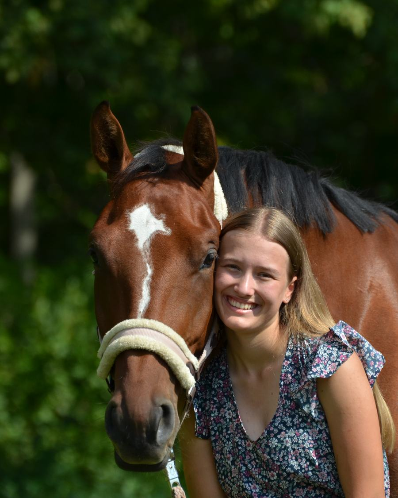
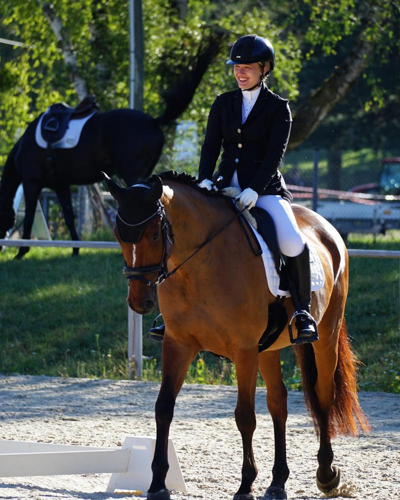

Reitsport, ehrlich erzählt.
Marken, die passen.
Ich bin Sarah Philine, Para-Reitsportlerin und Creatorin. Auf TikTok und Instagram zeige ich meinen Alltag mit meiner Stute My Milou — Training, Turniere, gute und schwere Tage. Ehrlich, ohne Hochglanz.

Eine Reiterin, eine Stute, ein Weg zurück
Worüber ich erzähle
Vier Themen, die auf meinen Kanälen immer wiederkehren.
Training & Turniersport
Vorbereitung, Turniertage, Rückschläge und Fortschritte — der Sport, wie er wirklich abläuft.
Stallalltag mit My Milou
Pflege, Fütterung, Ausrüstung und die kleinen Momente, die jede Reiterin kennt.
Ausrüstung, die sich bewährt
Was ich täglich benutze, was sich gelohnt hat und was nicht — aus eigener Erfahrung, nicht aus einem Briefing.
Mein Weg im Para-Reitsport
Wie Reiten mit Einschränkungen aussieht — und warum Vertrauen dabei wichtiger ist als Kraft.

Ich rede über das, was ich selbst reite
Ich sitze jeden Tag im Sattel und stehe jeden Tag im Stall. Was ich empfehle, benutze ich selbst — und was nicht funktioniert, sage ich auch.
Meine Community reitet selbst. Sie fragt nach Sätteln, Futter und Ausrüstung, weil sie diese Dinge kauft. Das macht eine Zusammenarbeit für Marken interessant.
Meine GeschichteErfolge, die für sich sprechen
Turniererfahrung aus Dressur und Springsport — überprüfbar, nicht behauptet.
Zwei Dressursiege
Zwei Siege in Dressurwettbewerben mit einer Wertnote von 8,0 sowie zahlreiche weitere Platzierungen.
Bayerische Meisterschaft 2026
Grade III, dazu 5. Platz in der Gesamtwertung Grades I–III.
Para-Deux Cup 2026
Auftakt in Landshut, dazu Team-Platzierungen in Brünst und auf Gut Kerschlach. Im Para-Deux reiten ein Parareiter und ein Reiter ohne Handicap gemeinsam. Zum Bericht
Aachen & DM
Start in Aachen und Teilnahme an der Deutschen Meisterschaft.